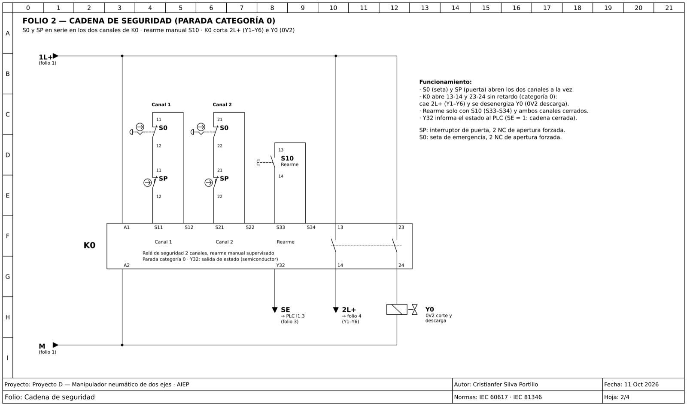
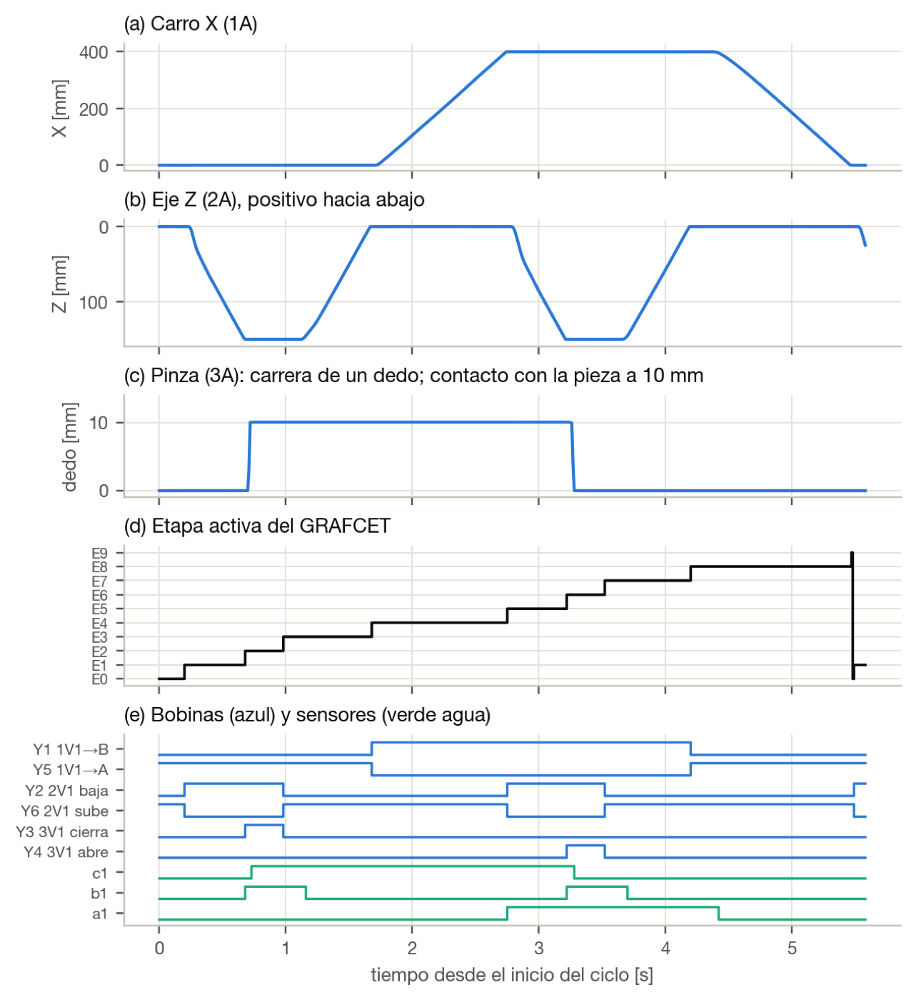
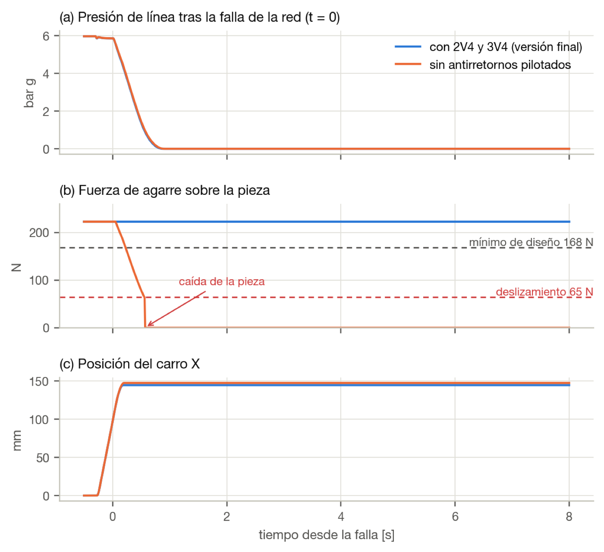
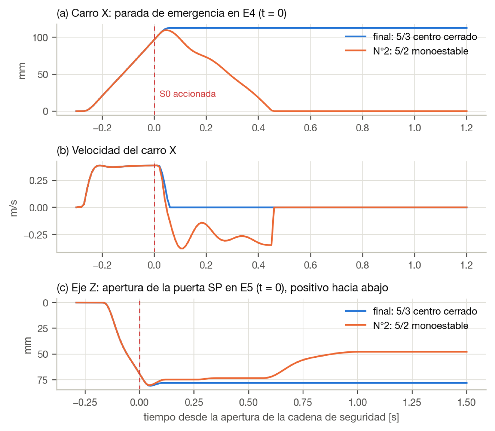
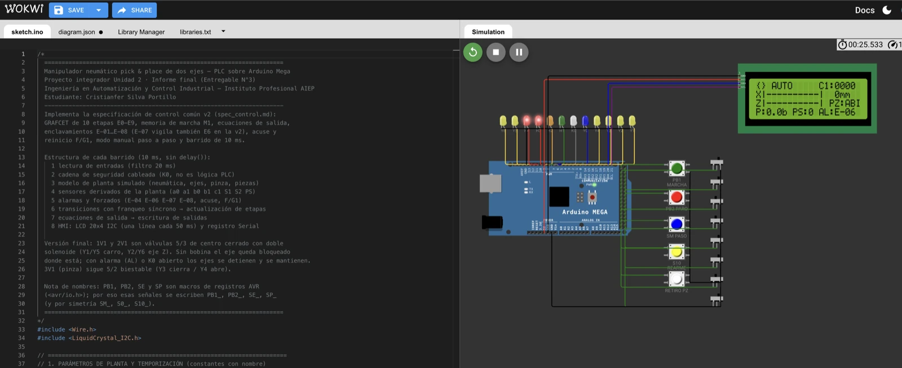

Requerimientos trazables
26 requerimientos funcionales, de desempeño, seguridad, restricción e interfaz, cada uno vinculado a un componente y a una prueba.
Perfil / Proyectos / Manipulador
Proyecto académico · AIEP · 2026
Diseño completo de un manipulador cartesiano que automatiza el traslado de piezas entre un torno CNC y una estación de inspección: requerimientos, mecánica, neumática, control secuencial, cadena de seguridad y validación en simulación.
En una célula de mecanizado, un operador traslada a mano cada pieza de acero (Ø50 × 60 mm, 0,93 kg) desde el torno hasta la inspección, a 400 mm de distancia.
por traslado: cerca del 30 % del ciclo de la célula, sin agregar valor.
de las piezas se dañan por la manipulación.
Movimiento repetitivo con carga, aristas vivas y pieza caliente.
Datos del caso de estudio planteado en la asignatura Diseño de Sistemas Mecatrónicos.
Un manipulador cartesiano sobre pórtico de aluminio: un cilindro horizontal (eje X, Ø32 × 400) mueve un carro guiado, del que cuelga un cilindro guiado vertical (eje Z, Ø25 × 150) con una pinza paralela de mordazas en V.

26 requerimientos funcionales, de desempeño, seguridad, restricción e interfaz, cada uno vinculado a un componente y a una prueba.
Fuerza de agarre de 168 N con factor de seguridad 2, verificada también a 5 bar; consumo de aire de 6,8 NL por ciclo.
Control por PLC en lugar de neumática pura: permite contar piezas, diagnosticar fallas, enclavar movimientos y operar paso a paso.
Secuencia del ciclo · 0 Reposo
A eje X · B eje Z · C pinza. Esquema simplificado, sin escala. Toca un paso para verlo.

Desarrollé un modelo dinámico en Python que acopla la neumática (presión en cada cámara, caudales por orificio ISO 6358, fugas), la mecánica (masas, rozamiento, topes) y un PLC emulado con barrido de 10 ms. Con él probé 12 escenarios, incluidas fallas.



La lógica de control completa corre en un Arduino Mega que hace de PLC, con pulsadores, pilotos y una pantalla que muestra la etapa, los ejes y las alarmas. Un banco de pruebas automático verifica la lógica: 72 de 72 comprobaciones correctas.

La pérdida eléctrica y la neumática afectan la sujeción de forma distinta: una se resuelve con la válvula, la otra con antirretornos. Y ninguna se da por resuelta sin medirla.
Separar la cadena de seguridad del PLC agrega componentes, pero cada función queda en un elemento que se puede probar por separado.
La simulación detectó un retroceso peligroso en emergencia que no era evidente en el papel, y cambió la selección de válvulas.